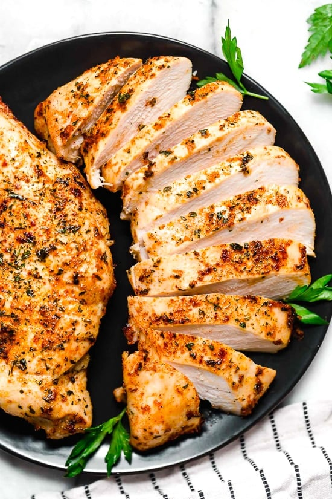

Steak

Reverse seared steak. It's pretty good.
Ingredients
- Steak
- Salt
- Pepper
- Garlic powder
- Olive oil
- Butter
Steps
- Preheat oven to 250°F
- While oven is heating season both sides of steak with salt, pepper, and garlic powder
- Put steak in heated oven until then internal temperature is 120°F. If you don't have a way to measure that it usually takes 1-1.5 hours depending on how thick the steak is
- While the steak is in the oven preheat a pan to high heat
- When the steak is finished in the oven put it in the pan with some olive oil
- The amount of time you will sear the steak varies based on how well done you want it
- For medium-rare cook both sides for 1 minute and 30 seconds
- After cooking lower the heat and put butter in the pan and baste the steak
- Take the steak out of the pan and let it rest